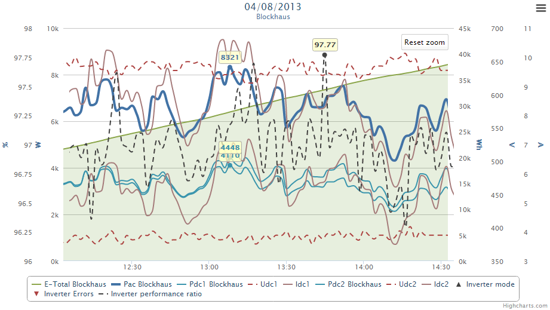

What's possible
You have on each side of the chart 5 axes available.
If you need more than 5 axes on each side, just take a look at the end of frontend/Chart/tpl/content.tpl ;-)
My most comprehensive chart renders up to 11 channels on 5 axes:

To get a better view on details, you can zoom the x axis by click and drag.

Created with the Personal Edition of HelpNDoc: Easily create iPhone documentation